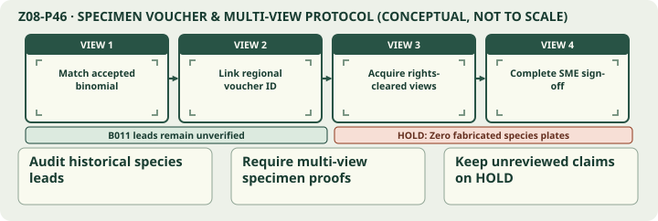

Z08-P46 · Rocks, minerals and materials · Adapted historical material
Reconciling B011 Regional Wood and Fiber Research Leads
Carry forward historical B011 regional tree-wood and fiber leads with explicit voucher, rights, and specialist verification holds.
When it applies · Editorial and field-reference governance linking historical Track B notes to current Z08/Z05 standards.
Equipment · Regional flora keys, Bell Museum voucher portal, photo provenance register.

Actions
- Treat historical B011 wood and fiber species lists as unverified research leads until each taxon is matched to accepted nomenclature and regional herbarium vouchers.[R15, R19, B02]
- Require matched multi-view photographs—whole tree, leaf/needle, bark, winter bud, and dead-wood sample—with rights and locality metadata before diagnostic display.[R19, B02]
- Retain explicit HOLD status on any B011 lead lacking independent forestry, botany, or materials-specialist confirmation.[R15, R19]
Failure recognition · Publishing historical lead lists as field-verified material guides imports unverified species boundaries and missing photographic provenance.[R19, B02]
Verify · Every B011-derived entry carries explicit provenance, open diagnostic photo requirements, and pending specialist review.[R19, B02]
Stop or change course · Stop promoting any historical B011 material lead to field approval without verified voucher records and specialist sign-off.[R15, R19, B02]
Evidence and editorial notes
- B02 · Bell Museum (UMN) · Bell Museum Specimen Collections Portal (Current web edition)
- Section: Curated herbarium and fungarium voucher specimen standards · Conditions: Corroborating species traits against documented physical vouchers
Support: Curated herbarium and fungarium vouchers link accepted scientific names, collection locality, habitat, and morphology to verifiable specimens.
Limitations: Image-search labels and crowd-sourced guesses cannot substitute for vouchered keys and qualified taxonomic review. · Conflicting evidence: None noted.
Editorial note: Core P19-A voucher discipline. · Specialist reviewer: Herbarium / fungarium curator
Primary source · checked 2026-11-25 - R15 · Minnesota DNR · Native Trees of Minnesota Identification Reference (Current web edition)
- Section: Regional wood species, grain, bark, and moisture variability · Conditions: Dead downed wood and natural bast fibers in Upper Midwest forests
Support: Wood density, grain straightness, resin content, and decay state vary widely by species, tree part, and moisture history.
Limitations: Visual grain inspection cannot certify structural load capacity; avoid cutting live trees where prohibited and reject punky or cracked wood. · Conflicting evidence: None noted.
Editorial note: Reconciles B007 wood notes with material limits. · Specialist reviewer: Forestry and wood-science specialist
Primary source · checked 2026-11-25 - R19 · USGS · Collecting Rocks: Rock Classes and Mineral Property Basics (USGS GIP)
- Section: Specimen documentation, scale, and locality recording · Conditions: Documenting geological specimens for reference or museum review
Support: Recording locality, host formation, metric scale, fresh vs weathered surface, and non-destructive traits preserves scientific value.
Limitations: A photograph or hand sample without locality and scale rarely permits definitive identification of fine-grained rocks. · Conflicting evidence: None noted.
Editorial note: Defines Z08 specimen voucher protocol. · Specialist reviewer: Curatorial geologist
Primary source · checked 2026-11-25
Source lineage · Adapted historical material (B011 atlas wood/fiber leads) · Classification · Adapted historical material.